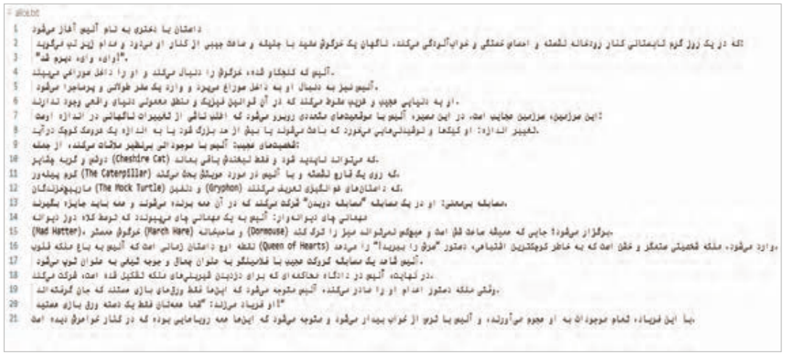
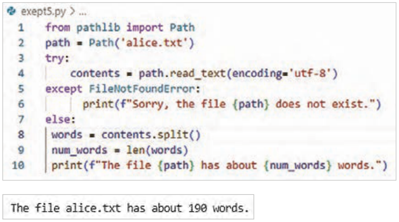
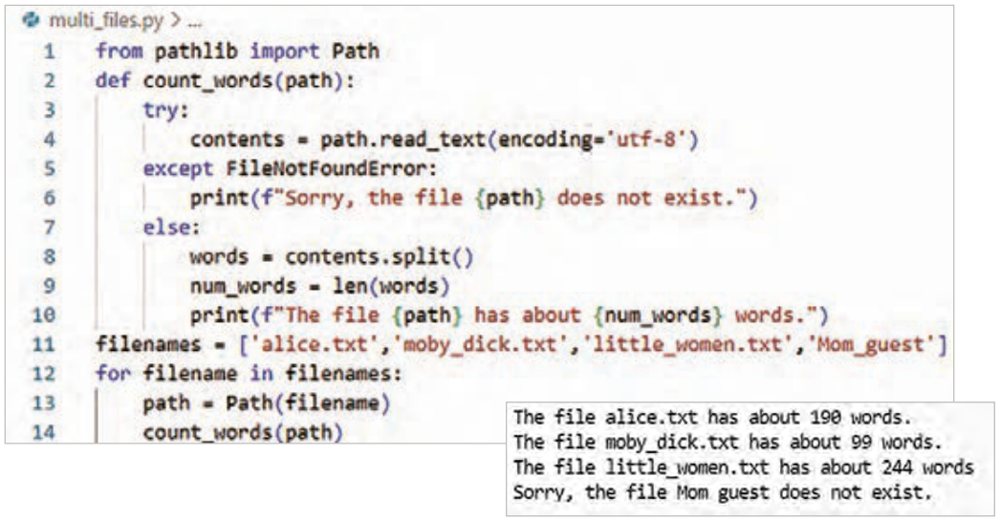
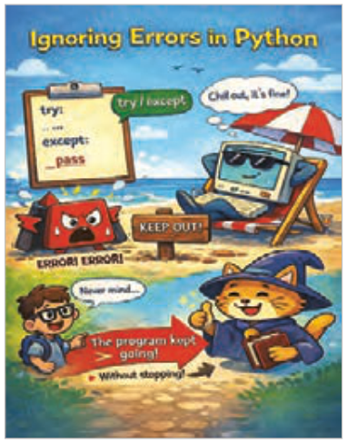
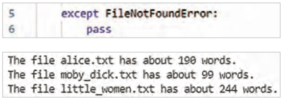
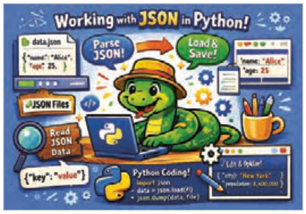
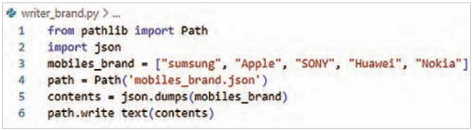
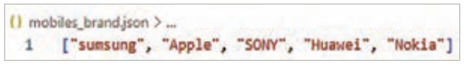
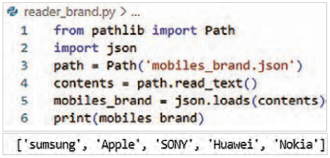

حالا اگر فایل alice.txt را ایجاد کنید و آن را در پوشه مناسب قرار دهید این بار بلوک try اجرا خواهد شد.
برنامه فایل را پیدا میکند و وارد بلوک else میشود.
متن آلیس در سرزمین عجایب را واردکنید، پایتون متن فایل را بهعنوان یک رشته طولانی درنظر میگیرد.
برای تولید لیستی از تمام کلمات موجود در کتاب، از متد رشتهای استفاده کنیدکه به طور پیشفرض یک رشته را در هر جایی که فضای خالی پیدا کند، تقسیم میکند.
برای شمارش تعداد این کلمات از len() استفاده کنید.


شکل ۴۵
صفحه ۲۶۸
کار با چند فایل
کار با چند فایل یکی از مهارتهای مهم است، چون تقریباً هیچ برنامه واقعی فقط با یک فایل کار نمیکند. کار با چند فایل یعنی برنامه بتواند بدون تکرار کد:
چندین فایل را پشت هم بخواند و روی همه آنها یک عملیات مشابه انجام دهد. پس لازم است یک تابع تعریف کنید و همچنین خطاها هم مدیریت و سپس نتایج ذخیره شوند.
برای انجام این کارکتابهای بیشتری را برای تحلیل اضافه کنید.
برای اینکه اجرای تحلیل روی چندین کتاب مختلف سادهتر و منظمتر شود بهتر است، بخش اصلی برنامه را به یک تابع به نام count_word منتقل کنید. اگر کدها را با برنامه قبل مقایسه کنید، متوجه میشوید تغییرات شامل اصلاح تو رفتگی و انتقال به بدنه تابع است.
خط 2: تابع def count_words(path) یک ورودی به نام path میگیرد که مسیر یک فایل متنی است.
خط 11: این خط از کد نام فایلها بهصورت رشتههای متنی (String) در یک لیست به نام filenames ذخیره میکند.
خط 12: در این خط ازیک حلقه for برای بررسی تکتک فایلهای داخل لیست و به دست آوردن تعداد کلمات متن فایل استفاده شده است.
خط 13: نام فایل به یک شیء از نوع Path تبدیل میشود.
خط 14: تابع count_words برای آن فایل اجرا میشود.
و اگر فایلی وجود نداشته باشد، برنامه خطا نمیدهد و پیام مناسب نمایش میدهد.

شکل ۴۶
صفحه ۲۶۹
نادیده گرفتن خطا (Failing Silently)

شکل ۴۷
در مثال قبلی، به کاربر اطلاع داده میشد که یکی از فایلها در دسترس نیست. با این وجود، در همه برنامهها نیازی نیست تمام خطاهای رخداده به کاربر نمایش داده شود.
در این حالت، خطا رخ میدهد، اما هیچگونه پیامی به کاربر نمایش داده نمیشود و روند اجرای برنامه بدون وقفه ادامه مییابد. برای پیادهسازی این حالت، از ساختار try-except استفاده میشود. با این تفاوت که در بخش except بهصورت صریح به مفسر پایتون دستور داده میشود هیچ عملی انجام ندهد. پس دستور print بعد از except را حذف کنید تاپیام خطا نمایش داده نشود و به جای آن دستور pass را اضافه کنید.
در زبان برنامهنویسی پایتون، دستور pass برای خالی نگهداشتن یک بلوک کد و انجام ندادن هیچگونه عملی به کار میرود. اگر فایل وجود نداشته باشد، خطا رخ میدهد، اما هیچ پیامی نمایش داده نمیشود، برنامه متوقف نمیشود و اجرای برنامه ادامه پیدا میکند.

شکل ۴۸
ذخیرهسازی دادهها
در بیشتربرنامهها، مثل تنظیمات دلخواه کاربری برای یک بازی یا دادههایی برای نمایش نمودار، اطلاعاتی از کاربران دریافت میشود. صرف نظر از نوع آنها، اطلاعات وارد شده در ساختارهای دادهای مانند لیستها و دیکشنریها ذخیره میشوند. اما وقتی برنامه بسته میشود، این دادهها از بین میروند. برای حفظ اطلاعات برای دفعات بعد اجرای برنامهها میتوانید آنها را در فایل ذخیره کنید. یکی از سادهترین روشها برای اینکار، استفاده از فایلهای JSON است که کمک میکنند دادههای پایتون بهصورت متنی ذخیره و در اجرای بعدی برنامه دوباره خواندهشوند. این قالب مخصوص پایتون نیست و در زبانهای برنامهنویسی دیگر نیز کاربرد دارد. در پایتون برای کار با JSON از ماژول json استفاده میشود.

شکل ۴۹
صفحه ۲۷۰
json.dump() دادهها را به قالب JSON تبدیل میکند و json.loads() دادههای ذخیره شده را دوباره به ساختارهای پایتون برمیگرداند.
فایلهای JSON به دلیل سادگی، خوانایی و کاربردگسترده یکی از روشهای مهم ذخیرهسازی دادهها در برنامهنویسی هستند.
ذخیره یک لیست در فایل JSON
توضیح کد:
خط 2ـ ماژول json وارد برنامه شدهاست.
خط 3ـ لیستی از برندهای تلفن همراه برای ذخیرهسازی ایجاد شده است.
خط 5ـ با استفاده از تابع dump، دادههای مورد نظر به قالب JSON تبدیل شدهاست. خروجی این تابع یک رشته متنی است که نمایانگر دادهها بهصورت json است

شکل ۵۰
خط 6ـ این رشته متنی با استفاده از متد write-text داخل فایل ذخیره میشود.
این برنامه خروجی در صفحه نمایش ندارد، اما اگر فایل mobiles_brand.json را باز کنید خواهید دید که دادهها به شکلی ذخیره شدهاند که بسیار شبیه به ساختار دادهها در پایتون است.

شکل ۵۱
خواندن دادهها از فایل JSON
برای برگرداندن اطلاعات ذخیره شده در فایل JSON به حافظه، لازم است برنامهای دیگر نوشت.

شکل ۵۲
صفحه ۲۷۱
توضیح کد:
خط 2ـ ابتدا ماژول json وارد برنامه شده است.
خط3ـ سپس محتوای فایل JSON را خوانده و بهصورت یک رشته متنی ذخیره شده است.
خط 4ـ از آنجا که فایل JSON در اصل یک فایل متنی با قالب مشخص است، با استفاده از متد read_text() خوانده شده است.
خط 5ـ در مرحله بعد با استفاده از تابع loads، این رشته متنی به ساختار دادهای مناسب در پایتون تبدیل شده است. در این برنامه، دادهها دوباره بهصورت یک لیست از اعداد در حافظه ذخیره میشوند.
پس از این مرحله، میتوانید از دادهها مانند سایر لیستهای پایتون استفاده کنید. به این ترتیب اطلاعاتی که قبلاً در فایل JSON ذخیره شده بودند، در اجرای بعدی برنامه دوباره قابل استفاده خواهند بود.
مثال: برنامهای بنویسید که مشخصات فنی یک گوشی هوشمند (شامل برند، مدل، مقدار رم و وضعیت گارانتی) را در قالب یک دیکشنری تعریف کند. سپس این برنامه باید:
با استفاده از کتابخانه json و کلاس Path از کتابخانه pathlib این دیکشنری را در فایلی بهنام mobile_specs.json ذخیره کند.
در مرحله بعد، فایل را باز کرده، محتوا را خوانده و فقط «مدل» و «مقدار رم» گوشی را در خروجی چاپ کند.
صفحه ۲۷۲
Page 267
حالا اگر فایل alice.txt را ایجاد کنید و آن را در پوشه مناسب قرار دهید این بار بلوک try اجرا خواهد شد.
برنامه فایل را پیدا میکند و وارد بلوک else میشود.
متن آلیس در سرزمین عجایب را واردکنید، پایتون متن فایل را بهعنوان یک رشته طولانی درنظر میگیرد.
برای تولید لیستی از تمام کلمات موجود در کتاب، از متد رشتهای استفاده کنیدکه به طور پیشفرض یک رشته را در هر جایی که فضای خالی پیدا کند، تقسیم میکند.
برای شمارش تعداد این کلمات از len() استفاده کنید.
Figure 45
Page 268
کار با چند فایل
کار با چند فایل یکی از مهارتهای مهم است، چون تقریباً هیچ برنامه واقعی فقط با یک فایل کار نمیکند. کار با چند فایل یعنی برنامه بتواند بدون تکرار کد:
چندین فایل را پشت هم بخواند و روی همه آنها یک عملیات مشابه انجام دهد. پس لازم است یک تابع تعریف کنید و همچنین خطاها هم مدیریت و سپس نتایج ذخیره شوند.
برای انجام این کارکتابهای بیشتری را برای تحلیل اضافه کنید.
برای اینکه اجرای تحلیل روی چندین کتاب مختلف سادهتر و منظمتر شود بهتر است، بخش اصلی برنامه را به یک تابع به نام count_word منتقل کنید. اگر کدها را با برنامه قبل مقایسه کنید، متوجه میشوید تغییرات شامل اصلاح تو رفتگی و انتقال به بدنه تابع است.
خط 2: تابع def count_words(path) یک ورودی به نام path میگیرد که مسیر یک فایل متنی است.
خط 11: این خط از کد نام فایلها بهصورت رشتههای متنی (String) در یک لیست به نام filenames ذخیره میکند.
خط 12: در این خط ازیک حلقه for برای بررسی تکتک فایلهای داخل لیست و به دست آوردن تعداد کلمات متن فایل استفاده شده است.
خط 13: نام فایل به یک شیء از نوع Path تبدیل میشود.
خط 14: تابع count_words برای آن فایل اجرا میشود.
و اگر فایلی وجود نداشته باشد، برنامه خطا نمیدهد و پیام مناسب نمایش میدهد.
Figure 46
Page 269
نادیده گرفتن خطا (Failing Silently)
Figure 47
در مثال قبلی، به کاربر اطلاع داده میشد که یکی از فایلها در دسترس نیست. با این وجود، در همه برنامهها نیازی نیست تمام خطاهای رخداده به کاربر نمایش داده شود.
در این حالت، خطا رخ میدهد، اما هیچگونه پیامی به کاربر نمایش داده نمیشود و روند اجرای برنامه بدون وقفه ادامه مییابد. برای پیادهسازی این حالت، از ساختار try-except استفاده میشود. با این تفاوت که در بخش except بهصورت صریح به مفسر پایتون دستور داده میشود هیچ عملی انجام ندهد. پس دستور print بعد از except را حذف کنید تاپیام خطا نمایش داده نشود و به جای آن دستور pass را اضافه کنید.
در زبان برنامهنویسی پایتون، دستور pass برای خالی نگهداشتن یک بلوک کد و انجام ندادن هیچگونه عملی به کار میرود. اگر فایل وجود نداشته باشد، خطا رخ میدهد، اما هیچ پیامی نمایش داده نمیشود، برنامه متوقف نمیشود و اجرای برنامه ادامه پیدا میکند.
Figure 48
ذخیرهسازی دادهها
در بیشتربرنامهها، مثل تنظیمات دلخواه کاربری برای یک بازی یا دادههایی برای نمایش نمودار، اطلاعاتی از کاربران دریافت میشود. صرف نظر از نوع آنها، اطلاعات وارد شده در ساختارهای دادهای مانند لیستها و دیکشنریها ذخیره میشوند. اما وقتی برنامه بسته میشود، این دادهها از بین میروند. برای حفظ اطلاعات برای دفعات بعد اجرای برنامهها میتوانید آنها را در فایل ذخیره کنید. یکی از سادهترین روشها برای اینکار، استفاده از فایلهای JSON است که کمک میکنند دادههای پایتون بهصورت متنی ذخیره و در اجرای بعدی برنامه دوباره خواندهشوند. این قالب مخصوص پایتون نیست و در زبانهای برنامهنویسی دیگر نیز کاربرد دارد. در پایتون برای کار با JSON از ماژول json استفاده میشود.
Figure 49
Page 270
json.dump() دادهها را به قالب JSON تبدیل میکند و json.loads() دادههای ذخیره شده را دوباره به ساختارهای پایتون برمیگرداند.
فایلهای JSON به دلیل سادگی، خوانایی و کاربردگسترده یکی از روشهای مهم ذخیرهسازی دادهها در برنامهنویسی هستند.
ذخیره یک لیست در فایل JSON
توضیح کد:
خط 2ـ ماژول json وارد برنامه شدهاست.
خط 3ـ لیستی از برندهای تلفن همراه برای ذخیرهسازی ایجاد شده است.
خط 5ـ با استفاده از تابع dump، دادههای مورد نظر به قالب JSON تبدیل شدهاست. خروجی این تابع یک رشته متنی است که نمایانگر دادهها بهصورت json است
Figure 50
خط 6ـ این رشته متنی با استفاده از متد write-text داخل فایل ذخیره میشود.
این برنامه خروجی در صفحه نمایش ندارد، اما اگر فایل mobiles_brand.json را باز کنید خواهید دید که دادهها به شکلی ذخیره شدهاند که بسیار شبیه به ساختار دادهها در پایتون است.
Figure 51
خواندن دادهها از فایل JSON
برای برگرداندن اطلاعات ذخیره شده در فایل JSON به حافظه، لازم است برنامهای دیگر نوشت.
Figure 52
Page 271
توضیح کد:
خط 2ـ ابتدا ماژول json وارد برنامه شده است.
خط3ـ سپس محتوای فایل JSON را خوانده و بهصورت یک رشته متنی ذخیره شده است.
خط 4ـ از آنجا که فایل JSON در اصل یک فایل متنی با قالب مشخص است، با استفاده از متد read_text() خوانده شده است.
خط 5ـ در مرحله بعد با استفاده از تابع loads، این رشته متنی به ساختار دادهای مناسب در پایتون تبدیل شده است. در این برنامه، دادهها دوباره بهصورت یک لیست از اعداد در حافظه ذخیره میشوند.
پس از این مرحله، میتوانید از دادهها مانند سایر لیستهای پایتون استفاده کنید. به این ترتیب اطلاعاتی که قبلاً در فایل JSON ذخیره شده بودند، در اجرای بعدی برنامه دوباره قابل استفاده خواهند بود.
مثال: برنامهای بنویسید که مشخصات فنی یک گوشی هوشمند (شامل برند، مدل، مقدار رم و وضعیت گارانتی) را در قالب یک دیکشنری تعریف کند. سپس این برنامه باید:
با استفاده از کتابخانه json و کلاس Path از کتابخانه pathlib این دیکشنری را در فایلی بهنام mobile_specs.json ذخیره کند.
در مرحله بعد، فایل را باز کرده، محتوا را خوانده و فقط «مدل» و «مقدار رم» گوشی را در خروجی چاپ کند.